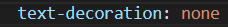

Тема, мета
Тема: КАСКАДНІ ТАБЛИЦІ СТИЛІВ. СЕЛЕКТОРИ .ІДЕНТИФІКАТОРИ. СТИЛЬОВЕ ОФОРМЛЕННЯ ТЕКСТОВИХ ЕЛЕМЕНТІВ В HTML-ДОКУМЕНТАХ.
Мета: придбати практичні навички роботи з селекторами, ідентифікаторами, списками, різноманітними властивостями кольору і фону, зовнішними та внутрішними відступами, плаваючими елементами, оформленням текстових елементів.
Способи підключення стилів
Існує три способи підключення стилів у CSS:
1. Вкладений CSS - стилі вписуються безпосередньо в HTML-код, за допомогою атрибута style. Наприклад:
Цей текст буде червоним
2. Зовнішній CSS - стилі зберігаються в окремому файлі з розширенням .css і підключаються до HTML-файлу за допомогою тегу link. Наприклад:
3. Вбудований CSS - стилі вписуються в тег style внутрішньо в head HTML-файлу. Наприклад:
Селектори
Я використовувала такі селектори:
1. Елементний селектор - вибирає всі елементи з вказаним ім'ям тега, наприклад p.
2. Класовий селектор - вибирає всі елементи з вказаним класом, наприклад .example.
3.Крім того, можна комбінувати різні селектори для більш точного вибору елементів. Наприклад, .example p вибере всі елементи p, які знаходяться всередині елементів з класом example.
CSS: шрифти,фон
Використання фону :
Результат:
Застосовуємо шрифти:


Результат:
Місце розташування
Висновки
Виконавши другу лабораторну роботу, я придбала практичні навички роботи з селекторами, ідентифікаторами,
списками, різноманітними властивостями кольору і фону, зовнішними та
внутрішними відступами, плаваючими елементами, оформленням текстових
елементів.